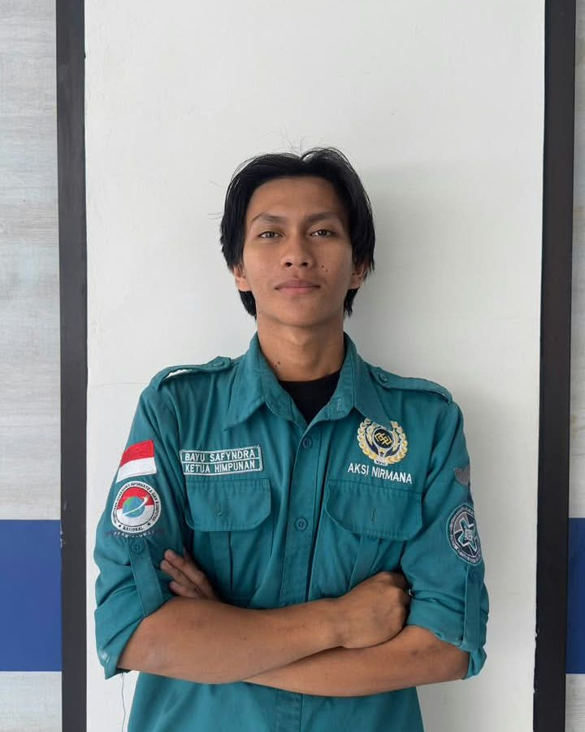
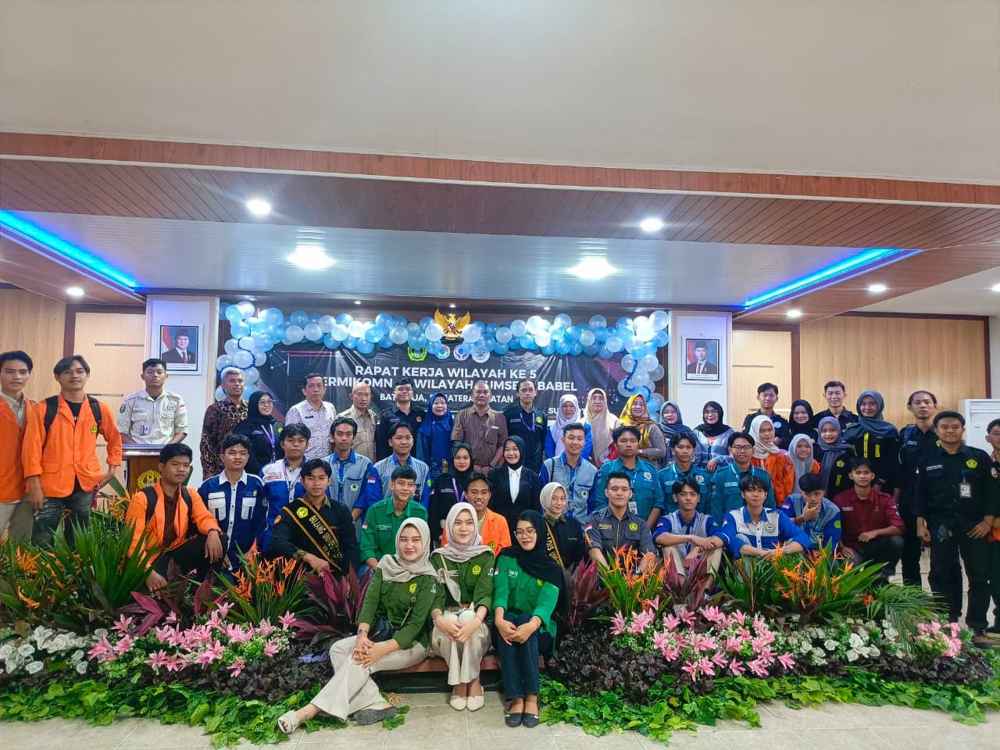
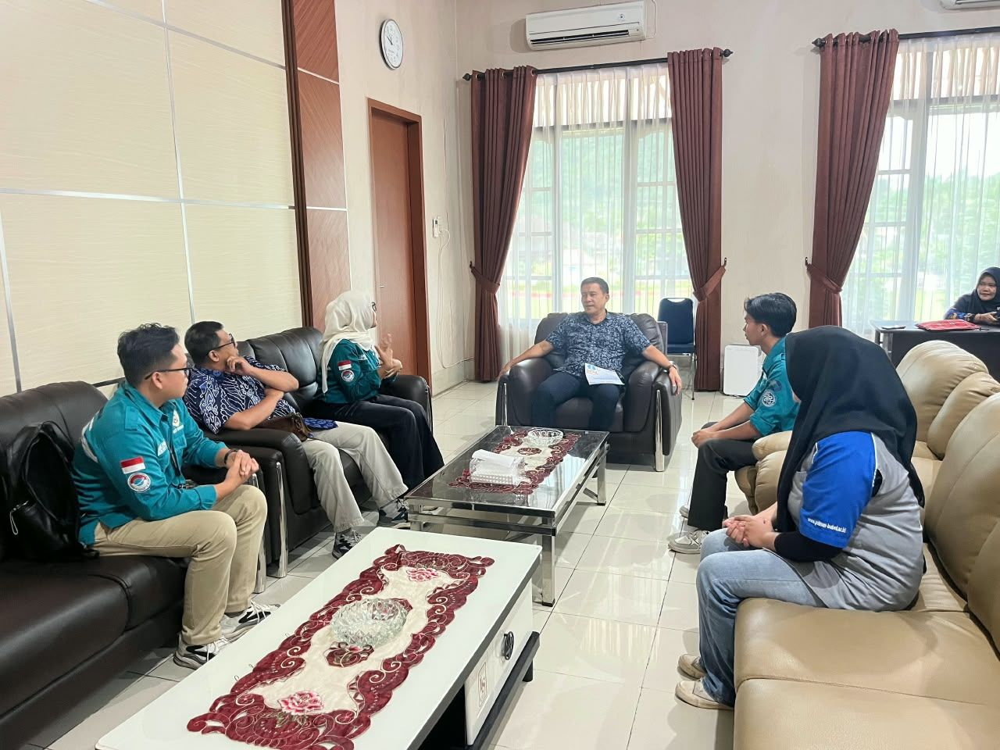
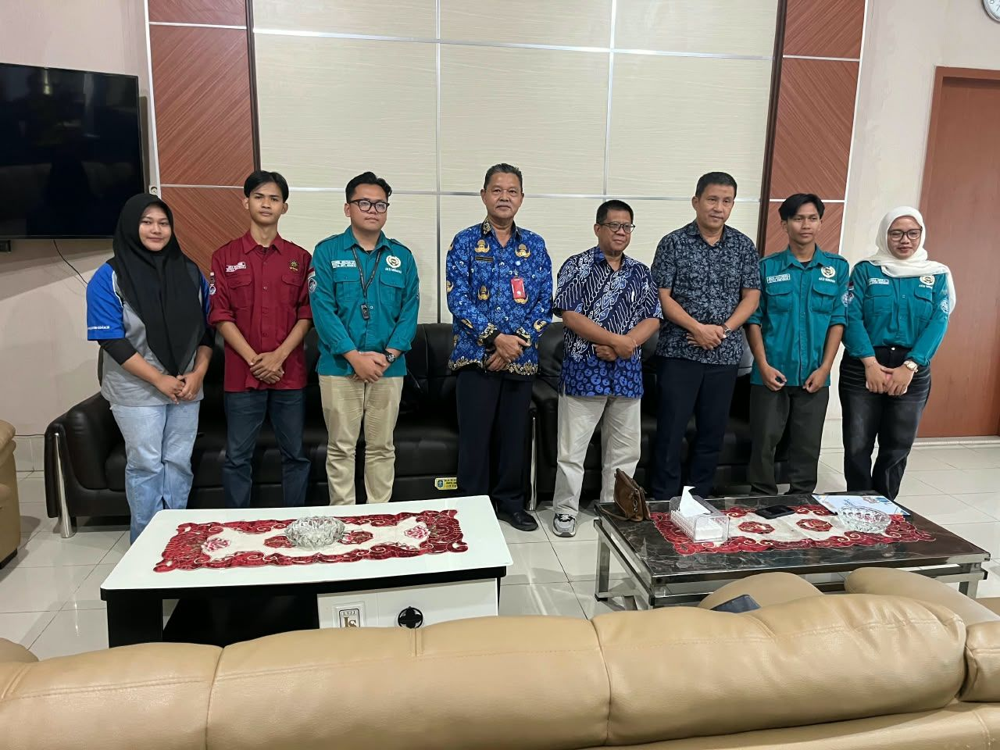
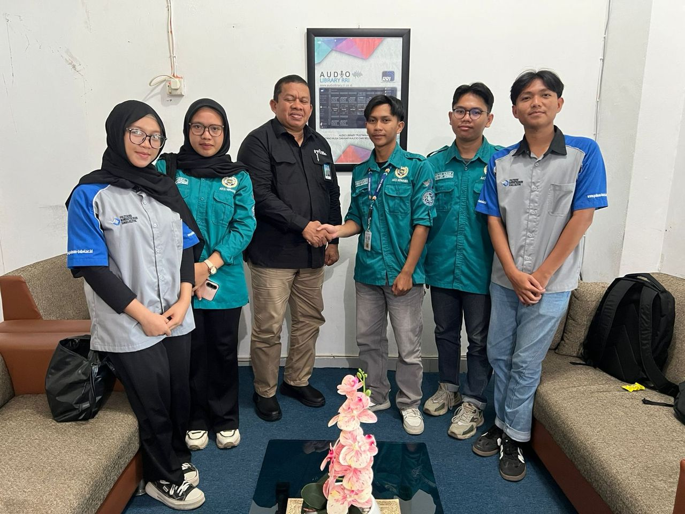
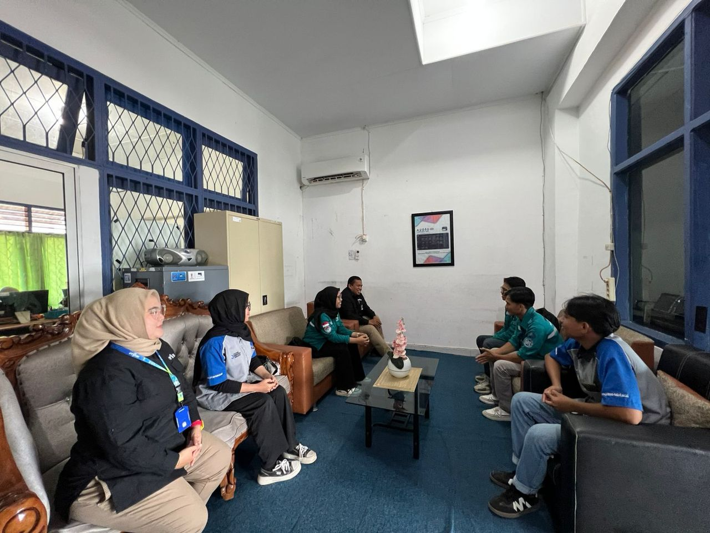
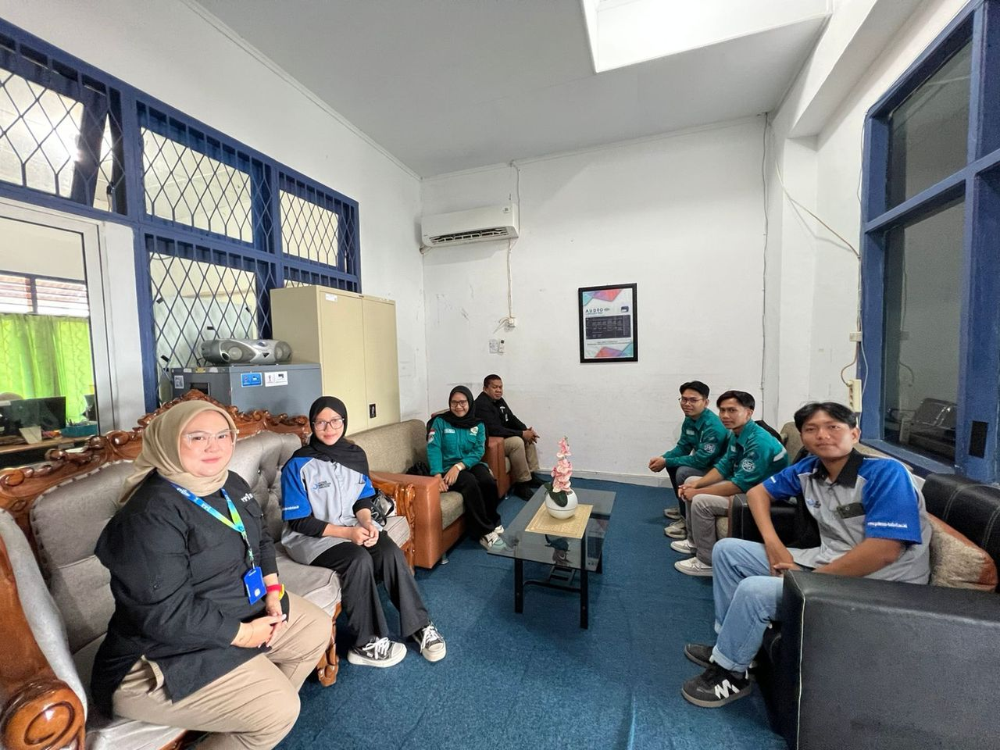
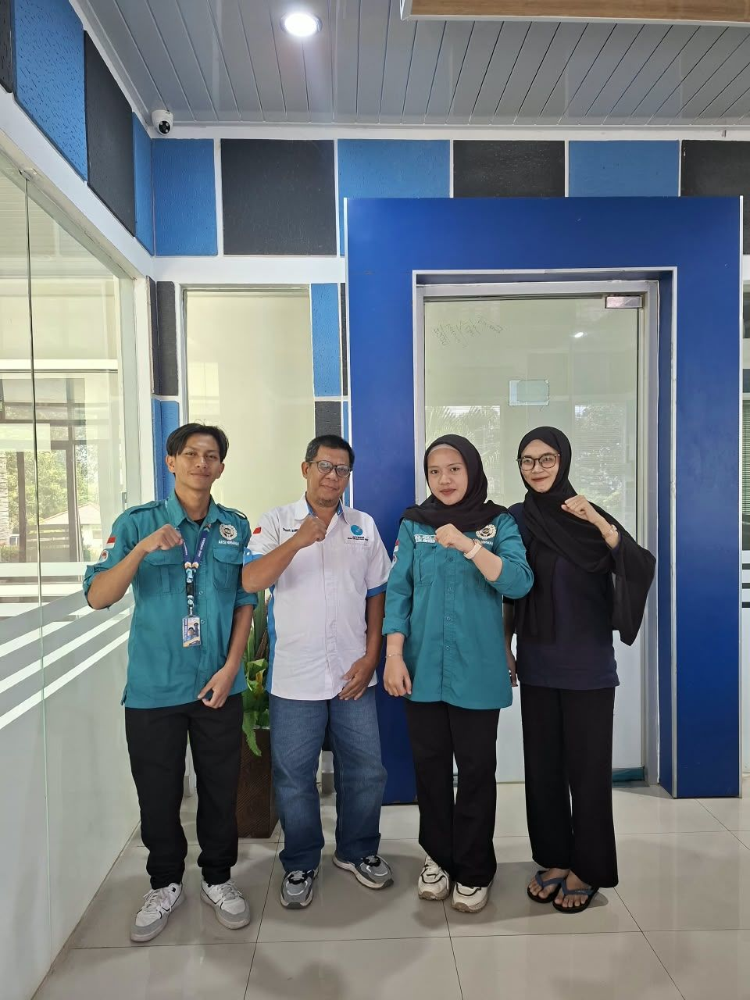

Software Engineer
D4 Rekayasa Perangkat Lunak, Politeknik Manufaktur Negeri Bangka Belitung
Tentang saya
Saya Bayu, mahasiswa D4 Rekayasa Perangkat Lunak kelas 2 RPL A di Polman Babel. Saya suka mengubah masalah nyata menjadi sistem yang rapi, mulai dari analisis kebutuhan sampai laporan akhirnya.
Saya menjabat sebagai Ketua Himpunan Mahasiswa Jurusan Informatika dan Bisnis (HMJ Infinis) periode 2025/2026. Dua dunia ini saling melengkapi: perangkat lunak melatih saya berpikir terstruktur, organisasi melatih saya bekerja dengan banyak orang.
Kiprah dan pencapaian
-
Kepemimpinan
Ketua Himpunan Mahasiswa Jurusan Informatika dan Bisnis
Memimpin HMJ Infinis (HMJ JIB) Polman Babel periode 2025/2026 di bawah Kabinet Wira Abhipraya.
-
Kegiatan kampus
Informatics Festival (INFEST 2026)
Berperan di kepanitiaan inti ajang kolaborasi teknologi dan bisnis yang menggabungkan hackathon, web technologies, business model canvas, desain infografis, dan seminar.
-
Pengabdian
Tim pengabdian masyarakat Polman Babel
Terlibat dalam tim dosen yang mendampingi pengrajin lokal kerajinan resam di Desa Dendang pada 2025.
-
Kompetisi
Samsung Solve for Tomorrow 2025
Peserta mahasiswa Polman Babel dalam program Samsung Solve for Tomorrow (SFT 2025).
-
Prestasi
Juara 2 LKS SMK tingkat Provinsi Kepulauan Bangka Belitung
Diraih saat bersekolah di SMKN 1 Bakam.
Galeri dokumentasi
Dokumentasi kegiatan dan acara yang pernah saya jalani.







Keahlian
- Rekayasa perangkat lunak
- Analisis kebutuhan, perancangan sistem, dan pengembangan sistem informasi berbasis web.
- Dokumentasi teknis
- Laporan proyek, proposal, dan jurnal ilmiah yang runtut dan mudah dipahami.
- Kepemimpinan dan fasilitasi
- Menyusun materi, memandu sesi, dan menggerakkan tim dalam kegiatan organisasi.
- Tata kelola organisasi
- Menyusun dan merapikan dokumen konstitusional serta aturan kerja organisasi.
Mari bekerja sama
Punya proyek, kolaborasi, atau peluang magang? Kirim pesan, saya senang berdiskusi.
bayusafyndra176@gmail.com